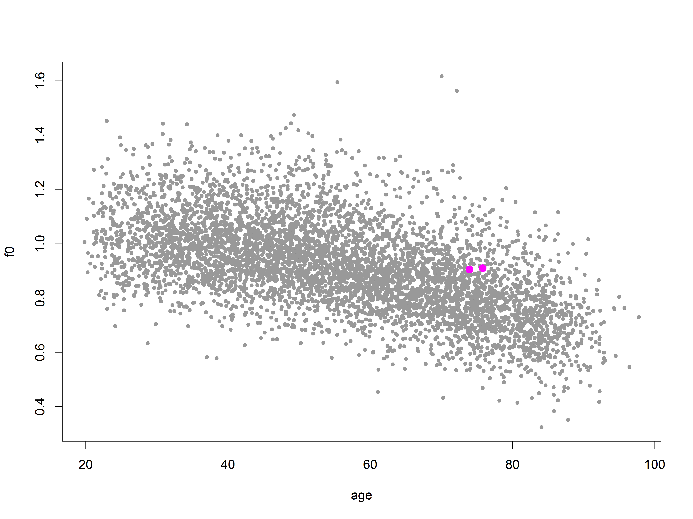
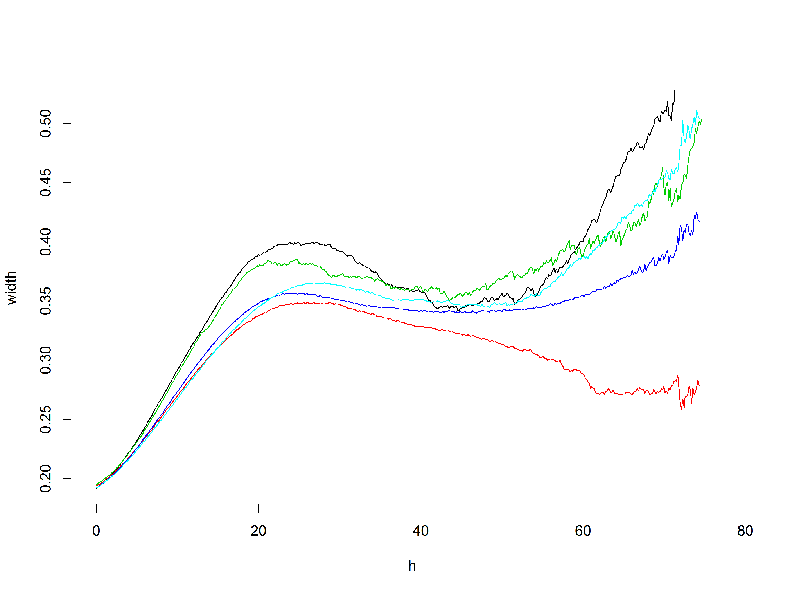
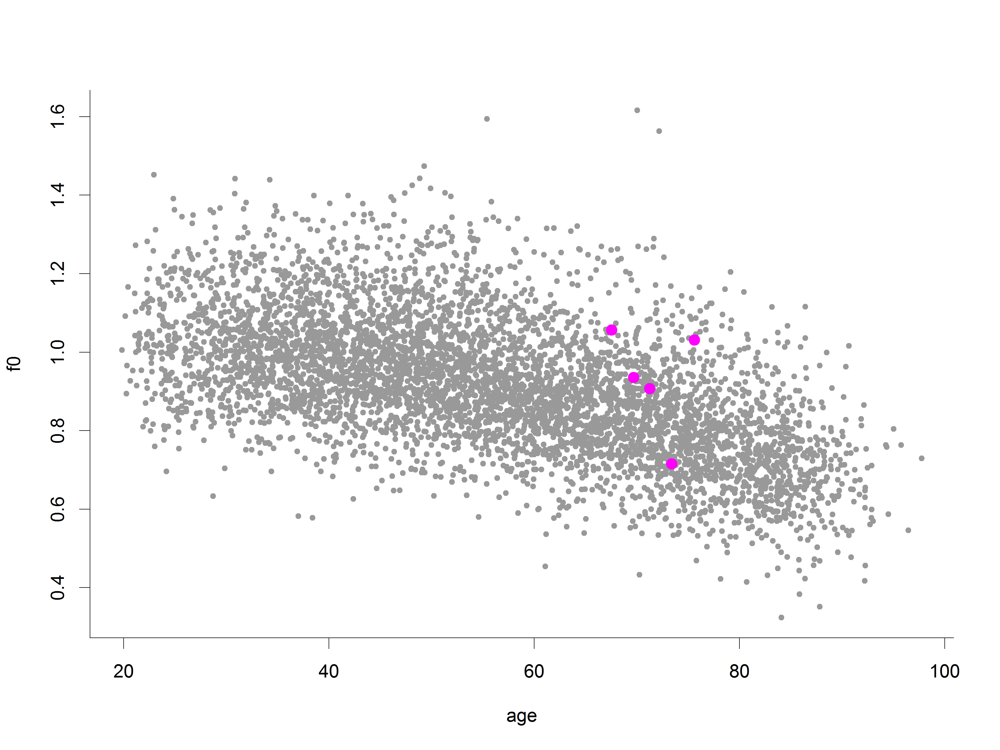
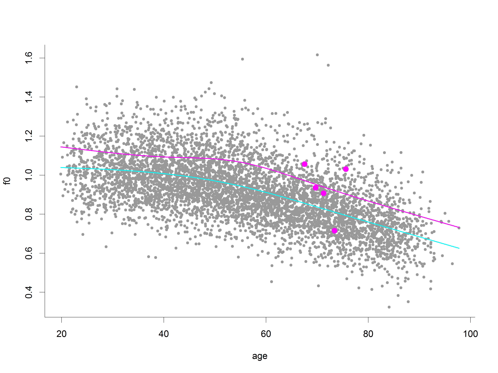
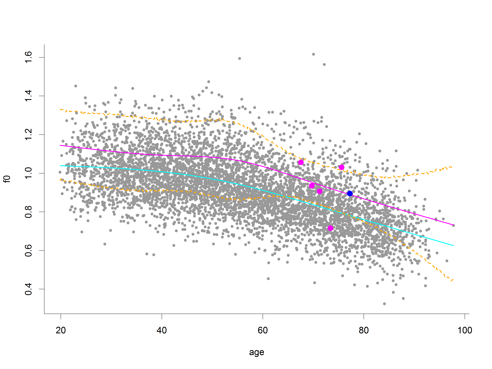
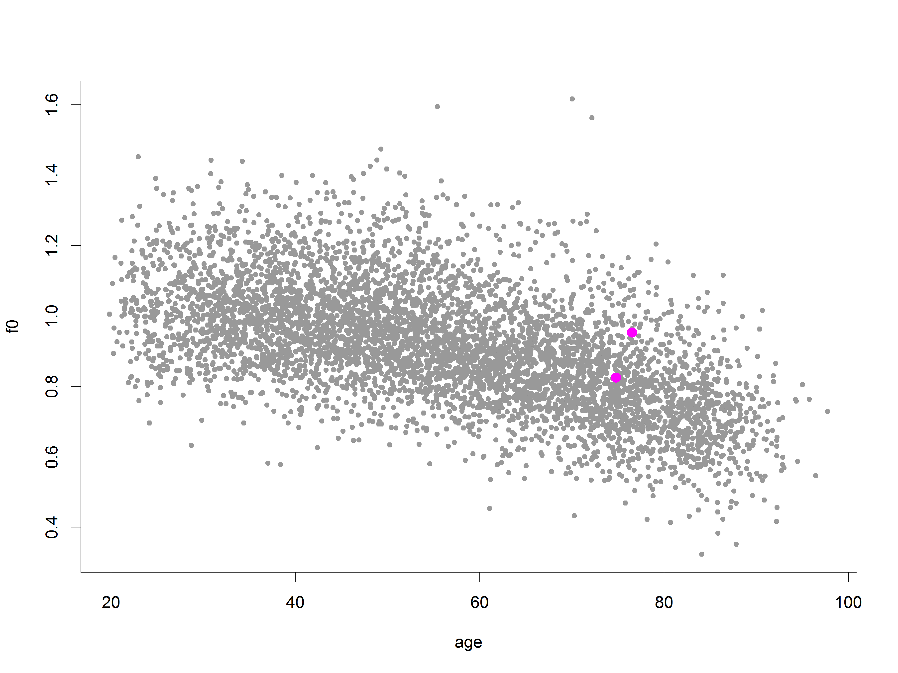
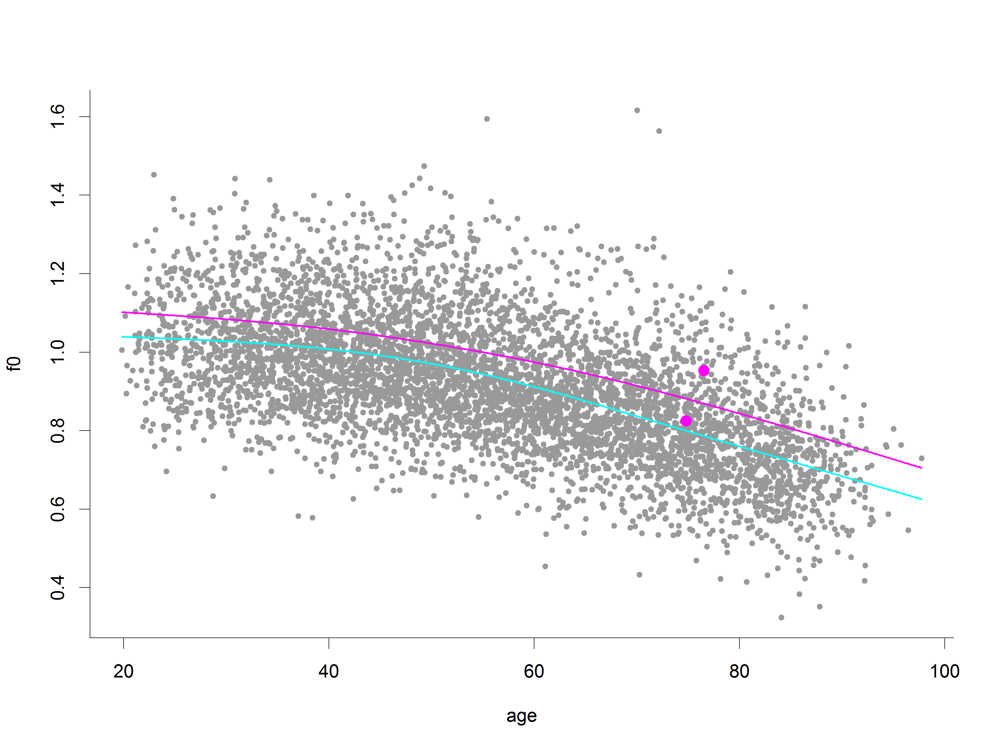
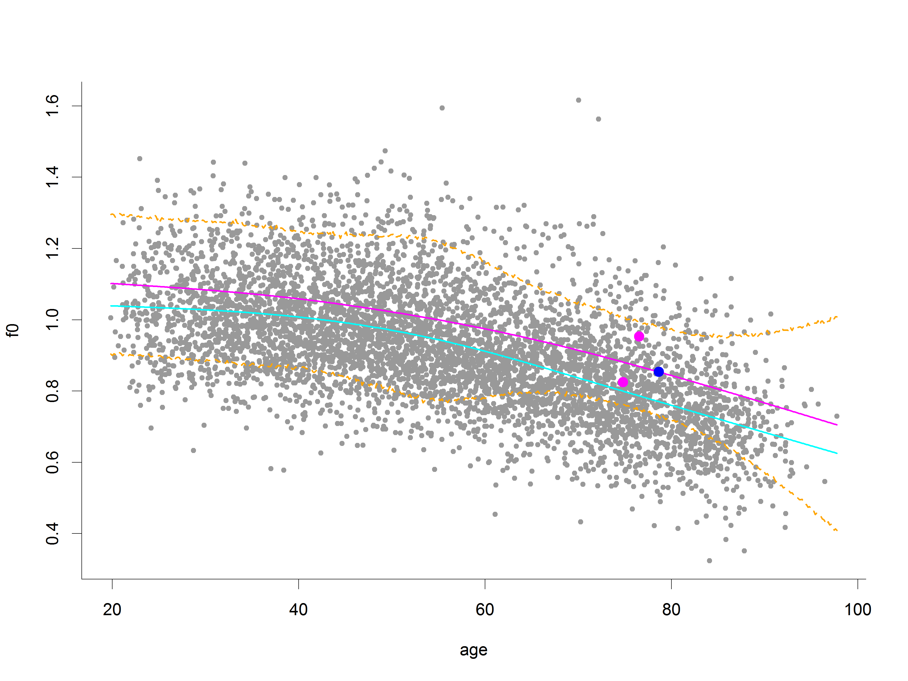

Assume that \(Y_{i}(t_{ij})\) are BMD observations
\(E[X(t)] = \mu(t)\)
\(\text{cov}[X(t), X(s)] = G(t, s)\)
The functional model can be written as
\[
\begin{aligned}
Y_{i}(t) & = X_{i}(t) + \epsilon_{i}(t)
\end{aligned}
\]
Mixed models representation
The subject specific curves are considered as deviations from the mean
\[
\begin{aligned}
X_{i}(t) & = \mu(t) + \eta_{i}(t)
\end{aligned}
\]
with \(\eta_{i}(t)\) modelled as a combination of basis functions, to give
\[
\begin{aligned}
Y_{i}(t_{ij}) & = \mu(t_{ij}) + \sum_{k=1}^{K}\xi_{ik}\psi_{k}(t_{ij}) +
\epsilon_{i}(t_{ij})
\end{aligned}
\]
Estimation of parameters
We treat the basis functions \(\psi_{k}(t)\) as fixed
\[
\begin{aligned}
G(s, t) & = \sum_{k=1}^{\infty}\lambda_{k}\psi_{k}(s)\psi_{k}(t) \\
X(t) - \mu(t) & = \sum_{k=1}^{\infty}\xi_{k}\psi_{k}(t) \\
\end{aligned}
\]
Two main approaches:
Use the BLUP
MCMC
Application to a longitudinal cohort study
Geelong Osteoporosis Study (GOS)
Prospective cohort study
Originally designed to address
Osteoporosis prevalence
Age-related BMD change
Osteoporosis and fracture risk
Also collects
Depressive and anxiety disorders (questionnaires and SCIDs)
Diet and alcohol
GOS Cohort
Age stratified
Barwon statistical division/electoral roll
At baseline
1494 women (1993-1997)
1540 men (2001-2006)
The importance of BMD
BMD is used to define osteoporosis
Much like BMI, this is seemingly arbitrary
Osteoporosis: BMD \(<2.5\) sd below the reference mean (!)
Predicting individual trajectories hopefully leads to improved planning and
patient management
Can we use FDA to fit and then predict future BMD trajectories?
Accuracy of fitted curves show via simulated data
We don't have the true curves (like all applied work!)
Accuracy of future values (predictions/forecasts)
We do have these
But they're measured with error as well!
Individual example

Individual example
Individual example
Cross-validation study
Withhold the last observation from a subset (test set) of individuals
Fit to the remaining data
Predict the distribution (MCMC) for future observations of the test set
individuals
Rinse and repeat
Data summaries:
Coverage of 95% posterior intervals
Widths of 95% PIs for forecast lengths \(h \in (0, H]\)
Results (5 xvals)
Coverage
95.4%
By number of future waves:
97.0%, 93.9%, 100%
10% loss 'alert'
If predicted to have greater than 10% loss of BMD
Needs finessing
9.9%
Width of forecast intervals

Is this information useful?
Patients with osteopenia are advised to have a repeat bone scan every 1-2
years
Management could be helped by
Prediction intervals, say 80% and 95%
Probabilities of crossing a threshold, e.g. loss of more than 5% BMD over
the next 2 years
Example 1

Example 1

Example 1

Example 2

Example 2

Example 2

Where to from here?
What is the impact of an acute event?
There's some evidence to suggest that an ICU stay has an impact on bone loss
How can we investigate this?
Prospectively?
No pre-ICU BMD baseline (best is 2-4 weeks following, if they come in)
GOS + ICU linkage
Regular measurements before and (hopefully) after
But:
Different ages when the ICU event occurs
Different stages in terms of the GOS measurement schedule
Effect of acute events: possible approach
Take the prediction/forecasting approach outlined previously:
Withhold all BMD measurements post-ICU event
Fit to the remaining data
Predict the distribution (MCMC) for future observations of the ICU
What to do with this distribution?
Probability of the known post-ICU measurement given the pre-ICU BMD
trajectory
Are those with an acute event just 'different'?
Is it just that those with an event have a different trajectory fullstop?
Unsupervised learning on trajectories and check labels?